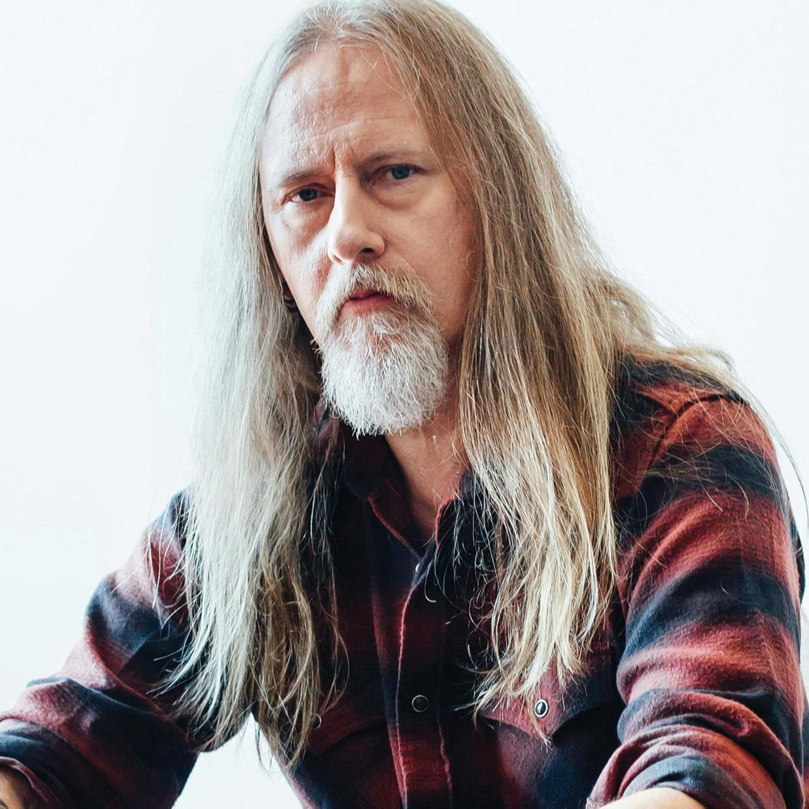

Jerry Cantrell
Born: 18 March 1966
Age:
Years Active: 1985–present
Genre/s: Alternative metal, grunge, heavy metal, doom metal, sludge metal, hard rock
Label/s: Columbia, Roadrunner, BMG
Member of: Alice in Chains
Jerry Fulton Cantrell Jr. (born March 18, 1966) is an American guitarist, singer, and songwriter. He is best known as the founder, lead guitarist, co-lead vocalist, and main songwriter of the rock band Alice in Chains. The band rose to international fame in the early 1990s during Seattle's grunge movement and is known for its distinctive vocal style which includes the harmonized vocals between Cantrell and Layne Staley (later Cantrell and William DuVall).
Cantrell started as a secondary lead vocalist on Alice in Chains' 1992 EP Sap. After Staley's death in 2002, Cantrell took the role of Alice in Chains' principal lead vocalist on Black Gives Way to Blue (2009), The Devil Put Dinosaurs Here (2013), and Rainier Fog (2018), with DuVall primarily singing older songs by Staley in live performances.
He also has a solo career and released the albums Boggy Depot in 1998 and Degradation Trip Volumes 1 & 2 in 2002. His third solo album, Brighten, was released in 2021. His most recent release is 2024's I Want Blood. Cantrell has also collaborated and performed with Heart, Ozzy Osbourne, Metallica, Pantera, Circus of Power, Metal Church, Gov't Mule, Damageplan, Pearl Jam, the Cult, Stone Temple Pilots, Danzig, Glenn Hughes, Duff McKagan, and Deftones, among others.
Cantrell was named "Riff Lord" by British hard rock/metal magazine Metal Hammer in 2006. Guitar World Magazine ranked Cantrell as the 38th out of "100 Greatest Heavy Metal Guitarists of All Time" in 2004, and the 37th "Greatest Guitar Player of All Time" in 2012. Guitar World also ranked Cantrell's solo in "Man in the Box" at No. 77 on its list of "100 Greatest Guitar Solos" in 2008. Cantrell has earned nine Grammy Award nominations as a member of Alice in Chains.
He also contributed to the soundtracks of The Cable Guy (1996), John Wick: Chapter 2 (2017), and Dark Nights: Metal (2018), and he has made cameos in films such as Jerry Maguire (1996), Rock Slyde (2009), Deadwood: The Movie (2019) and Sinners (2025). Cantrell also acted in the Alice in Chains mockumentaries The Nona Tapes (1995) and AIC 23 (2013).